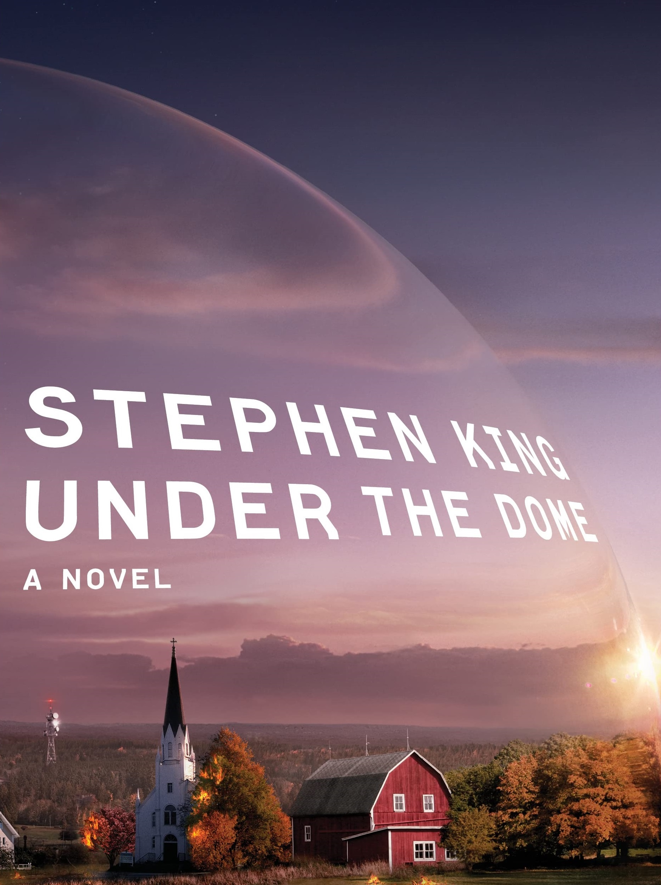

Stephen King
Stephen King is a 'New York Times'-bestselling novelist who made his name in the horror and fantasy genres with books like 'Carrie,' 'The Shining' and 'IT.' Much of his work has been adapted for film and TV.
Who is Stephen King?
Stephen King was born on September 21, 1947, in Portland, Maine. He graduated from the University of Maine and later worked as a teacher while establishing himself as a writer. Having also published work under the pseudonym Richard Bachman, King's first horror novel, Carrie, was a huge success. Over the years, King has become known for titles that are both commercially successful and sometimes critically acclaimed. His books have sold more than 350 million copies worldwide and been adapted into numerous successful films.
Early Life and Education
Stephen Edwin King was born on September 21, 1947, in Portland, Maine. King is recognized as one of the most famous and successful horror writers of all time. His parents, Donald and Nellie Ruth Pillsbury King, split up when he was very young, and he and his brother David divided their time between Indiana and Connecticut for several years. King later moved back to Maine with his mother and brother. There he graduated from Lisbon Falls High School in 1966.
King stayed close to home for college, attending the University of Maine at Orono. There he wrote for the school's newspaper and served in its student government. While in school, King published his first short story, which appeared in Startling Mystery Stories. After graduating with a degree in English in 1970, he tried to find a position as a teacher but had no luck at first. King took a job in a laundry and continued to write stories in his spare time until late 1971, when he began working as an English educator at Hampden Academy. It was that year that he also married fellow writer Tabitha Spruce.
King of Thrills and Chills
In 1973, King sold his first novel, Carrie, the tale of a tormented teen who gets revenge on her peers. The book became a huge success after it was published the following year, allowing him to devote himself to writing full time. It was later adapted for the big screen with Sissy Spacek as the title character. More popular novels soon followed, including Salem's Lot (1975), The Shining (1977), Firestarter (1980), Cujo (1981) and IT (1986).
While making novels about vicious, rabid dogs and sewer-dwelling monsters — as seen in Cujo and IT, respectively — King published several books as Richard Bachman. Four early novels — Rage (1977), The Long Walk (1979), Roadwork (1981) and The Running Man (1982) — were published under the moniker because of King's concern that the public wouldn't accept more than one book from an author within a year. He came up with the alias after seeing a novel by Richard Stark on his desk (actually a pseudonym used by Donald Westlake) coupled with what he heard playing on his record player at the time — "You Ain't Seen Nothin' Yet," by Bachman Turner Overdrive.
Television and Film Adaptations
Although many of King's works were made into film or TV adaptations — Cujo and Firestarter were released for the big screen in 1983 and '84 respectively, while It debuted as a miniseries in 1990 — the film The Shining, released in 1980 and starring Jack Nicholson and Shelley Duvall, became a renowned horror thriller that has stood the test of time.
For a good portion of his career, King wrote novels and stories at a breakneck speed. He published several books per year for much of the 1980s and '90s. His compelling, thrilling tales have continued to be used as the basis of numerous films for the big and small screens. Actress Kathy Bates and actor James Caan starred in the critically and commercially successful adaptation of Misery in 1990, with Bates winning an Oscar for her performance as the psychotic Annie Wilkes.
Four years later, The Shawshank Redemption, starring Tim Robbins and Morgan Freeman and based on one of his stories, became another acclaimed outing with multiple Oscar nominations. King's 1978 novel The Stand became a 1994 miniseries with Molly Ringwald and Gary Sinise in the lead, while the mid-'90s serialized outing The Green Mile was turned into a 1999 prison-based film starring Tom Hanks and Michael Clarke Duncan.
Later Works
King continues to create and be involved in provocative projects. He has worked directly in television, writing for series like Kingdom Hospital and Under the Dome, with the latter based on his 2009 novel. In 2011, he published 11/22/63, a novel involving time travel as part of an effort to stop the assassination of President John F. Kennedy.
King also wrote Joyland (2013), a pulp-fiction style thriller that takes readers on a journey to uncovering who's behind an unsolved murder. And he surprised audiences by releasing Doctor Sleep (2013), a sequel to The Shining, with Sleep hitting No. 1 on the New York Times bestseller list.



The novelist then published Mr. Mercedes (2014), with Finders Keepers (2015) and End of Watch (2016) rounding out the crime trilogy. In 2017, he teamed with son Owen to deliver Sleeping Beauties, about a mysterious pandemic that leaves women enveloped in cocoons. That year he polished off another collaboration, with Richard Chizmar, on the novella Gwendy's Button Box.
Meanwhile, adaptations of King's works have continued to populate the big and small screens. In 2017, the first season of Mr. Mercedes began airing on the Audience Network, while a remake of the horror classic IT enjoyed a hefty box-office haul. In 2019, an adaptation of Doctor Sleep and IT Chapter Two hit theaters, along with a reboot of another signature King property, Pet Sematary.
That year also brought the publication of the tireless writer's 61st novel, The Institute, about children with supernatural abilities who are taken from their parents and incarcerated by a mysterious organization.
Personal Life
King and his novelist wife divide their time between Florida and Maine. They have three children: Naomi Rachel, a reverend; Joseph Hillstrom, who writes under the pen name Joe Hill and is a lauded horror-fiction writer in his own right; and Owen Phillip, whose first collection of stories was published in 2005.
In honor of his prolific output and success in his craft, King was among the recipients of the National Medal of Arts in 2015.
Outside of writing, King is a music fan. He even sometimes plays guitar and sings in a band called Rock Bottom Remainders with fellow literary stars like Dave Barry, Barbara Kingsolver and Amy Tan. The group has performed a number of times over the years to raise money for charity.